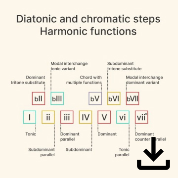
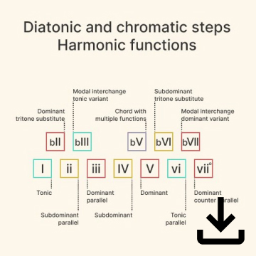

On this youtube channel for music composition I try to explore new musical ideas and beyond. Until you find your true voice and style, you need to undergo many trials of artistic exploration, which are very rewarding. Have a look and join me on this journey!
Aiming to get a big picture understanding of the ancient Greeks, I decided to do research about all the various authors, philosophers, mathematicians and others and put them in chronological order. On the website you can read about every person, filter them in various ways and see whose writings still survived.
In this section you can find some helpful materials that I made on various subjects in music.
I had a great oportunity to work with the Picturecut team from Austria on this short drama film. Making the music for this was an interesting process, filled with lessons and insights. The criminal in the story has to go through very stressful situations, while being followed by the police.
My main objective is to merge different concepts and make complex information simple through design for digital media. The work process to achieve this can be described as follows:
So far I have practiced this method in the domains of music, history and their relation to other subjects. If you find my work valuable, I will be happy to help!
{kind=link}

 
